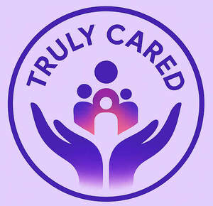

Trade Mark Journal No.2025/030 25 July 2025
UK00004230372 7 July 2025 (9,35,42,44,45)

- Class 9
- "Computer software and mobile applications for care management, coordination of health and personal care services, and communication between families and freelance housekeeping and care providers; artificial intelligence software for supporting care, household help and nursing activities." .
- Class 35
- "Provision of an online marketplace for connecting consumers with freelance household staff, carers, and nursing personnel; recruitment services for freelance workers in the care and household sectors; advertising and promotion of freelance services; business networking services for domestic support staff.".
- Class 42
- "Software as a Service (SaaS) and Platform as a Service (PaaS) for providing digital care coordination tools; hosting an online platform for managing care and support services; providing temporary use of online non-downloadable software for monitoring, organising and managing care services; artificial intelligence as a service (AIaaS) for supporting care and nursing staff." .
- Class 44
- "Providing information in the field of health care and personal care services; online support services for families and care recipients.".
- Class 45
- "Provision of personal and household support services, including companionship, personal care, and household management services facilitated via an online platform; providing information relating to domestic help and personal support services.".
Claudia Patricia Simone Koch-Pritchard